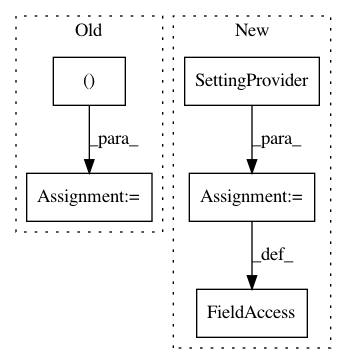

96ed45619f3cd8ec0997b84c7f48e813a854cca1,Orange/widgets/unsupervised/owmanifoldlearning.py,OWManifoldLearning,OWManifoldLearning_1,#,147
Before Change
MANIFOLD_METHODS = (TSNE, MDS, Isomap, LocallyLinearEmbedding,
SpectralEmbedding)
parameter_editors = (TSNEParametersEditor, MDSParametersEditor,
IsomapParametersEditor,
LocallyLinearEmbeddingParametersEditor,
SpectralEmbeddingParametersEditor)
resizing_enabled = False
want_main_area = False
After Change
tsne_editor = SettingProvider(TSNEParametersEditor)
mds_editor = SettingProvider(MDSParametersEditor)
isomap_editor = SettingProvider(IsomapParametersEditor)
lle_editor = SettingProvider(LocallyLinearEmbeddingParametersEditor)
spectral_editor = SettingProvider(SpectralEmbeddingParametersEditor)
resizing_enabled = False
want_main_area = False
In pattern: SUPERPATTERN
Frequency: 3
Non-data size: 5
Instances
Project Name: biolab/orange3
Commit Name: 96ed45619f3cd8ec0997b84c7f48e813a854cca1
Time: 2016-10-28
Author: janez.demsar@fri.uni-lj.si
File Name: Orange/widgets/unsupervised/owmanifoldlearning.py
Class Name: OWManifoldLearning
Method Name: OWManifoldLearning_1
Project Name: biolab/orange3
Commit Name: 0088176376f87417437131c0e2fe911213351bd3
Time: 2017-09-28
Author: jerneju@gmail.com
File Name: Orange/widgets/unsupervised/owmds.py
Class Name: OWMDS
Method Name: OWMDS_2
Project Name: biolab/orange3
Commit Name: 00e20a04533bd58c9074cc19205b5c28adfef2c9
Time: 2016-10-29
Author: janez.demsar@fri.uni-lj.si
File Name: Orange/widgets/unsupervised/owmanifoldlearning.py
Class Name: OWManifoldLearning
Method Name: OWManifoldLearning_1